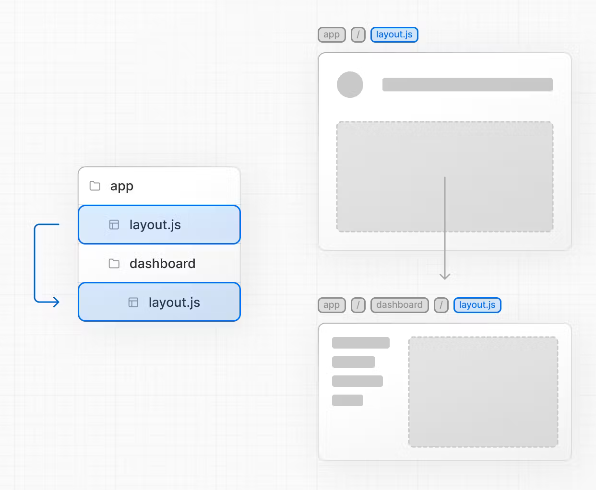

Next.js
Next.js is a framework for react that also includes backend functionality.
After working through this guide you should
- know how to build server rendered pages in next.js
- know how to build api endpoints in next.js
1 What is next.js?
Next.js is an open source framework, but it is mainly developed by Vercel. Vercels business is platform a service. They published next.js in 2016. React documentation mentions Next.js among "Recommended Toolchains" since at least 2021.
2 What does it offer?
Next.js gives you a folder structure for you application, and several different ways to render webpages:
- static webpages that are rendered once, at build time.
- api endpoints
- server rendered pages that are served as HTML, but can be refreshed.
- React Server Components, where you can mix client and server side components in one react tree
3 The missing persistance layer
Next.js is not a full backend framework. For example it does not offer an ORM or another persistance layer. There is good documentation for combining nextjs with
4 next.js routing
From next.js 13 onwards the routes are created in the app/ directory.
page.js is the default (like index.html used to be), folders can contain parameters in brackets:
app/page.js --> /
app/otherpage/page.js --> /otherpage
app/users/page.js --> /users/
app/users/[:id]/page.js --> /users/42/
There are special files:
-
layout.jsfor nested layouts -
error.jsfor error handling with error boundaries

5 next.js as a Static Site Generator
You can use next.js like jekyll, eleventy or gatsby as a static
site generator: during build time, html files are generated and can
then be served by a minimal webserver without backend capabilities.
This is the classic Jamstack (where JAM stands for JavaScript, API and Markup).
See Static Site Generation (SSG)
- create a nextjs app
- in next.config.js add one or two values (see below)
npm run build- find the static files in folder
out/
5.1 next.config.js for static site generation
We must set output to export to enable static site generations.
For most Webserver for static pages we need to set trailingSlash to true.
If the site will be hosted in a subfolder, for example at http://bjelline.pages.mediacube.at/statixnextjs/ we must configure this as the basepath:
const nextConfig = {
output: 'export',
trailingSlash: true,
basePath: '/foldername',
}
5.2 using github or gitlab pages
You can host your static files gitlab pages with the following configuration:
gitlab CI is used to build the pages, and the resulting folder out is declared
as an artifact. Gitlab will pick up this artifact and serve it through its
pages webserver.
image: node
before_script:
- npm install
cache:
key: ${CI_COMMIT_REF_SLUG}
paths:
- node_modules/
- .next/cache/
pages:
script:
- npm run build
- mv public old_republic
- mv out public
artifacts:
paths:
- public
only:
- main
6 next.js for API endpoints
Use files called route.js as route handlers to implement the endpoints.
// file /app/greeting/route.js
import { NextResponse } from 'next/server'
export async function GET() {
return NextResponse.json({ "hello": "world" })
}
7 Server Side Rendering (SSR)
With server side rendering, a HTML document is shipped to the browser. Then the browser loads the necessary JavaScript, and hydrates the HTML into a client side React App.
8 React Server Components
The react render tree is composed from server and client components. In next.js 13 all components
are server components by default. You have to add "use client"; on top of a component to turn
it into a client component.

8.1 How to use RSC
Simple rules for client and server components:
- Use
.server.jsand.client.jsas filename extensions. - Server Components can contain client components.
- Client Components cannot contain server components.
- Server Components can instantiate both client and server components, and pass in a Server Component as the children prop to a ClientComponent.
- Server Components cannot pass functions as props to its descendents, only data.
8.2 Server Components can contain client components:
// this is server_component.server.js
import ClientComponent from './ClientComponent.client'
export default function ServerComponent() {
return (
<>
<ClientComponent />
</>
)
}
8.3 Client Components cannot contain server components:
// this is client_component.client.js
// ERROR !!!!
import ServerComponent from './ServerComponent.server'
export default function ClientComponent() {
return (
<div>
<ServerComponent />
</div>
)
}
8.4 You can pass in Server Components to a ClientComponent
// this is outer_server_component.server.js
import ClientComponent from './ClientComponent.client'
import ServerComponent from './ServerComponent.server'
export default function OuterServerComponent() {
return (
<ClientComponent>
<ServerComponent />
</ClientComponent>
)
}
8.5 Server Comopnents cannot pass functions to its descendents
Because props are serialized into JSON, and functions cannot be serialized into JSON, Server Components cannot pass functions as props to its descendents.
// ERROR !!!!
function SomeServerComponent() {
return <button onClick={() => alert('OHHAI')}>Click me!</button>
}
// ERROR !!!!
9 Hosting next.js
Vercel, the company behind next.js, offers hosting on their platform. There is a free tier.
To host next.js you need:
- to run the build step to create static assets and javascript bundles
- to run node.js on the server
If you are using dokku a node.js buildpack will be chosen by default, and do both for you. you might additionally consider:
- setting up permanent storage at
public/upload, if you want to handle uploaded file and store them in the webspcae - setting up a database